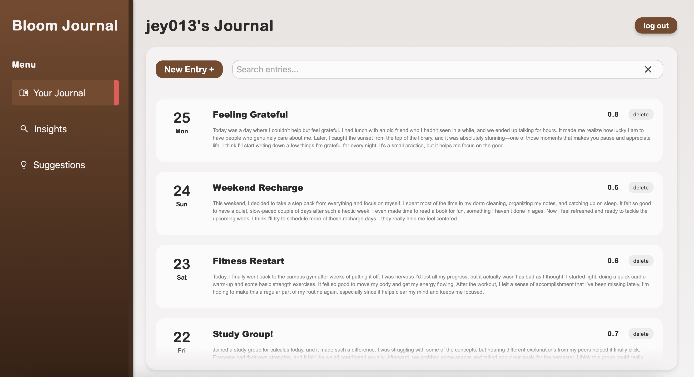
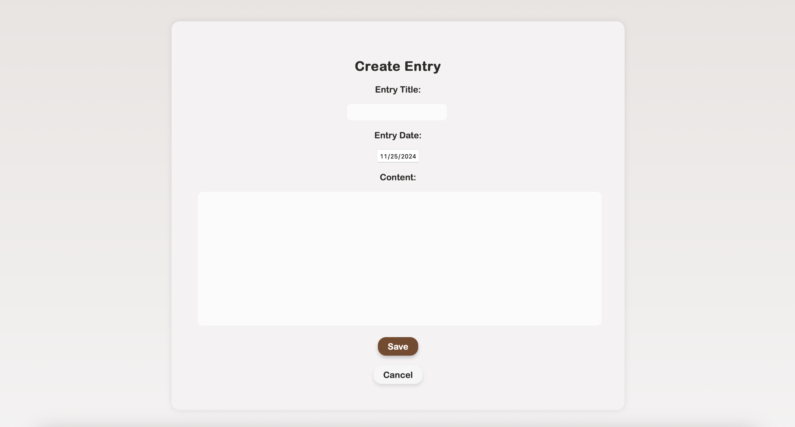
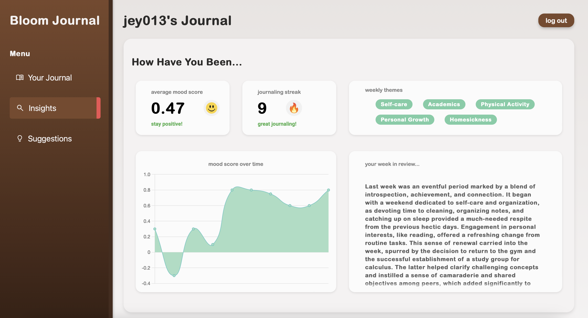

Bloom Journal - A Modern Take on Personal Growth
In today’s fast-paced world, managing mental health can feel overwhelming. Journaling is a proven method
to help people process their thoughts, track their emotions, and find clarity. It’s simple, personal, and effective
— offering a space to reflect without judgment.
Motivated by the transformative potential of journaling and the possibilities of artificial intelligence, I
developed Bloom Journal—an AI-powered digital journal designed to enhance the traditional journaling experience
with modern insights. Key features include:
Seamless Entry Management
With a user-friendly dashboard screen, journal entries can be easily viewed, created, and deleted. The backend, built with
Flask, handles these operations efficiently, ensuring smooth and reliable performance.
All journal entries and user data are stored securely in a PostgreSQL database hosted on AWS. The database is designed to
prioritize data integrity and privacy, ensuring users feel confident that their personal thoughts are protected.

Sentiment Analysis in Real Time
As users write, Bloom Journal analyzes the emotional tone of their entries. This gives immediate feedback on mood
trends, helping users recognize patterns and shifts in their mental state.

Weekly Summaries and Trends
At the end of each week, Bloom Journal synthesizes recurring themes and significant events, offering a high-level overview
of your personal journey. In the insights screen, users may view their current average mood score, their journaling streak,
and a graph of their mood score over time. Additionally, Bloom Journal generates a custom list of common themes identified
throughout the week, along with a detailed summary of important events.

Learn More: https://github.com/jey013ucsd/BloomJournal